Echipă de ingineri constructori, cu autorizări distincte. Putem urmări o lucrare de la proiect până la recepție fără să schimbați interlocutorul, iar dacă include instalații de ridicat sau sub presiune, partea ISCIR e acoperită de aceeași echipă.
Vedeți cu ce vă putem ajuta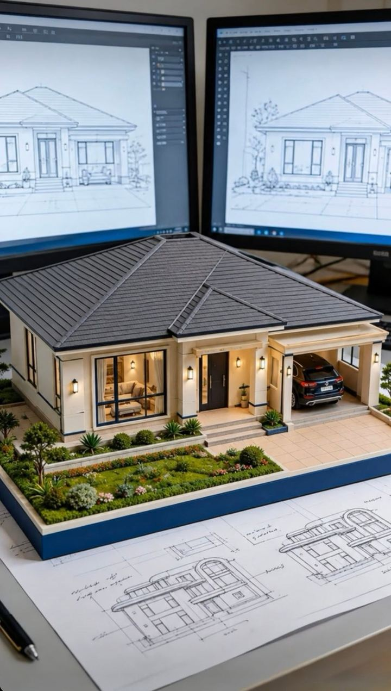
Fiecare specialitate are pagina ei, cu ce presupune concret rolul, când e obligatoriu prin lege și ce documente sunt necesare ca să începem.
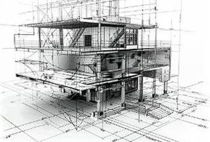
ProiectareDocumentații tehnice pentru autorizarea lucrărilor, proiecte tehnice și detalii de execuție.
Detalii →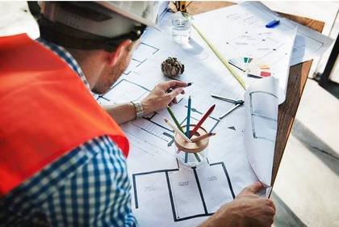
Autorizat I.S.C.Reprezentarea beneficiarului, verificarea calității execuției, faze determinante, recepție.
Detalii →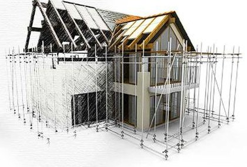
ExecuțiePrezență pe șantier, verificarea conformității cu proiectul și responsabil tehnic cu execuția.
Detalii →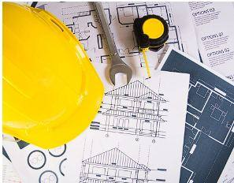
TransversalPlanificare, urmărirea termenelor și a bugetului, coordonarea tuturor părților implicate.
Detalii →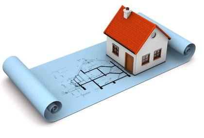
DocumentațieÎntocmirea, completarea sau reconstituirea dosarului complet al construcției, până la recepție.
Detalii →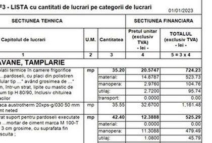
LicitațiiDevize pe categorii de lucrări, liste de cantități, extrase de resurse și propunere tehnică — pentru licitații publice sau pentru beneficiari privați.
Detalii →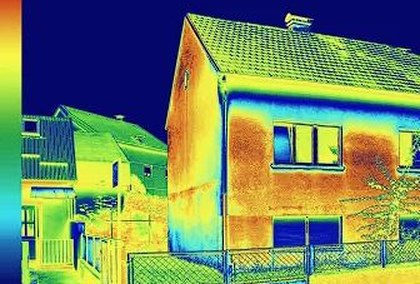
InvestigațiePunți termice, izolație deficitară, infiltrații și supraîncălziri, văzute cu camera în infraroșu.
Detalii →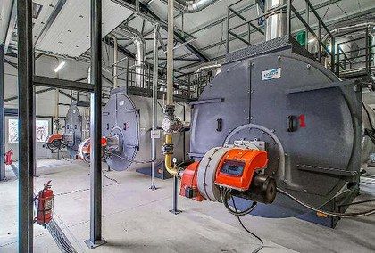
Autorizat ISCIRSupravegherea instalațiilor de ridicat și sub presiune: evidență, autorizări, verificări, instruire.
Detalii →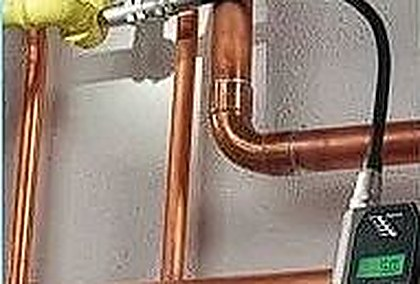
Autorizat ISCIRVerificarea tehnică a lucrărilor de montare, reparare și întreținere, pentru firme autorizate ISCIR.
Detalii →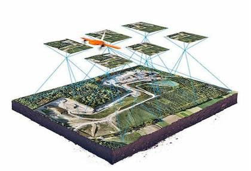
Din aerAcoperișuri și fațade fără schelă, ortofotoplan, model 3D, volume și termografie aeriană.
Detalii →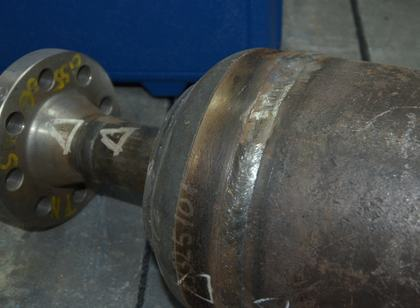
Încercări nedistructiveÎncercări nedistructive prin metoda examinării vizuale, la îmbinări sudate și alte produse metalice, cu raport și criterii de acceptare.
Detalii →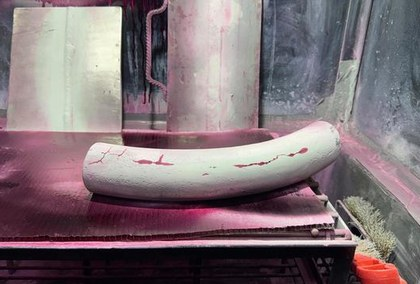
Încercări nedistructiveÎncercări nedistructive prin metoda lichidelor penetrante: fisuri și pori deschiși la suprafață, inclusiv pe inox și aluminiu.
Detalii →Scrieți-ne
Completați formularul și vă răspunde un inginer, nu un robot. Dacă e urgent, sunați direct.